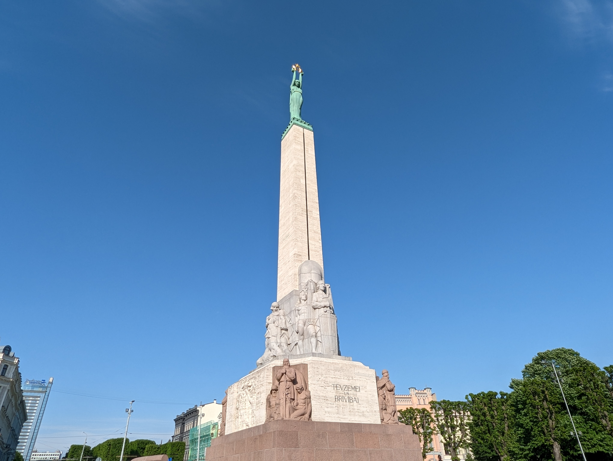

Tilts uz nekurieni
Mans ceļš sākas ar "Tiltu uz nekurieni". Šī vieta ļoti labi atspoguļo Rīgas infrastuktūras izaugsmi. Šī vieta pašlaik ir populāra apskates vieta gan instragrameru, gan tiktokeru vidū. Pats vēl neesmu kāpis uz šī monumenta, taču ikdienā braucot gar to, ir pavērusies tāda interese. Protams, ir jauki atskatīties uz šo vietu, taču tajā pat laikā paliek bēdīgī, jo iebraucu kārtejā bedrē, kura varēja tikt aizlāpīta par šī tilta uzbūves līdzekļiem.

Vanšu tilts
Šī vieta man visvairāk asociējas ar skaisto skatu pār Daugavu. Katru rītu braucot pāri tam - vai tas būtu ar velosipēdu vai ar auto - iebraucu kārtejā bedrē. Ir patīkami atrasties tik augstu virs Daugavas, taču nedaudz skatu bojā izvietotās "īslaicīgas" barjeras uz gājēju celiņa. Pūš patīkams vējiņš, kas liek atgādīnāt par jūras spēcīgajiem viļņiem.

Rīgas pils

Šo vietu ikdienā aplūkoju braucot pāri Vanšu tiltam. Ir patīkami redzēt, cik sakopta ir tās teritorija, taču tajā pat laikā, ārpus tās, ir diezgan piesārņots ar Vecrīgas tusētaju atkritumiem. Katru darba dienas rītu var nolūkoties uz cilvēkiem, kas sēž ar saviem auto sastrēgumos un triec tos kārtējās bedrēs.
Bastejkalna parks

Manuprāt, vispatīkamā vieta rīgā, ir salīdzinoši kluss un mierīgs, izņemot skaļos BMW, kas triecas uz priekšu ar saviem "taisnajiem izpūtējiem". Ir ļoti jauki redzēt, kad kāds ved savu suni pastaigā, vai arī kāds cits brīvdabā saulainā laikā lasa grāmatu. Šī vieta vienmēr asociējas ar Latvijas Universitātes klātbutni - kur mūs visus vienmēr gaida smaidīgi pasniedzēji.
Brīvības piemineklis

Brīvības piemineklis ir ļoti jauka vieta. Tā vienmēr liek atcerēties Latvijas brīvības cīnītājus. Ir svarīgi šo vietu kopt, uzturēt un neļaut nevienam svešajam to no mums atņemt! Uzskatu, ka Kārļa Zāles projekts "Mirdzi kā zvaigzne!" ir ļoti izdevies un ikvienam latvietim, tūristam vai kādam citam, šī vieta liek acīm mirdzēt.
Latvijas universitāte

Un te nu mēs esam - Latvijas Universitātē. Vieta, kur jaunieši un ikviens, kas vēlas izglītoties kāpj pa savām karjeras kāpnēm. Ir patīkami satikt gan pasniedzējus, gan arī pārejos kolēģus šeit. Universitāte man asociējas ar domu apmaiņu ar kolēģiem, lietu pētīšanu un zināšanu apgūšanu. Ierodoties šeit, galvenais ir neaizmirst izmantot tikai sānējās kāpnes pie galvenajām durvīm, sliktākajā gadījumā - jāizmanto logs. Protams, ne vienmēr ir tik labi kā izklausās, reizēm šeit ir auksti, logi pūš, taču tikuntā, tā ir mūsu - Latvijas Universitāte!